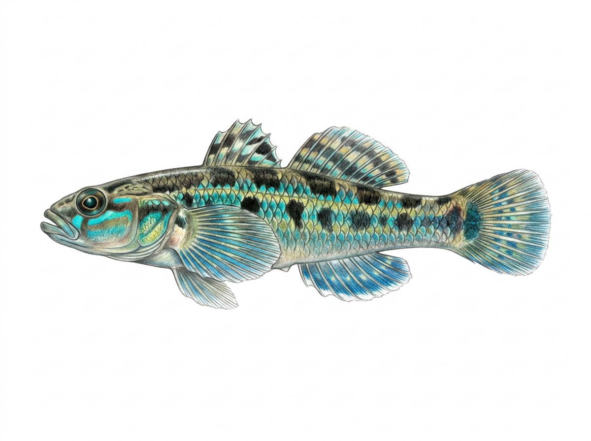

Sri Lanka Martenstyn's Goby
Stiphodon martenstyni
Family: Gobiidae
The Sri Lanka Martenstyn's Goby (Stiphodon martenstyni), known locally as වැලිගොව්වා (Weligovwa), is a critically endangered freshwater goby endemic to Sri Lanka, belonging to the family Gobiidae. True to its family, it features two separate dorsal fins and fused pelvic fins that form a specialized pelvic sucker disc, which allows it to maintain its position on stone surfaces in rapid currents. This slender, colorful goby exhibits notable sexual dimorphism, with males displaying vibrant metallic blue-green iridescent highlights along their sides, while females feature a more subdued, striped patterning. Confined to clear, undisturbed hill-country forest streams with rocky and gravelly beds, this specialized bottom-dweller feeds mainly on benthic microalgae and diatoms scraped directly off clean rock surfaces.